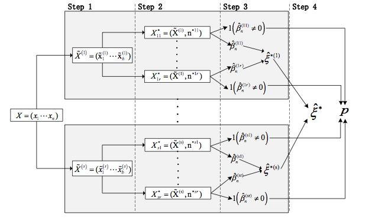
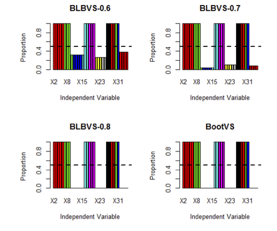
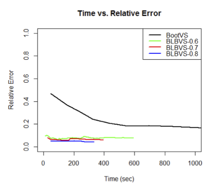
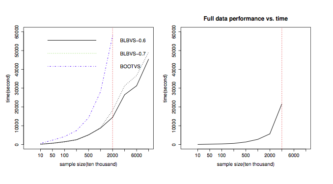

Variable Selection with Boostrap for GLM in Massive Datasets
John Honaker
Motivation
The Bag of Little Bootstraps variable selection method was introduced to give a boostrap variable selection process for massive data sets.
The method should have comparable accuracy to the naive estimator, but hopefully be much faster computationally.
Bag of Little Bootstraps
The algorithm for the BLBVS procedure is as follows. Partition the set of observed data \((x_1, ..., x_n)\) into \(s\) randomly selected subsets (called bags) of size \(b = \{n^\gamma : \gamma \in \left(0, 1\right) \}\) chosen without replacement. Each subset produces \(r\) bootstrap resamples chosen with replacement of size \(n\), the original sample size. Notice that each resample can only have at most \(b\) distinct data points.
Notation
Let \(\hat{\beta_{ij}}\) be a vetor of estimators for the \(j\text{th}\) resample of the \(i\text{th}\) subset, and \(\hat{\xi}_i\) be the standard error of the parameter estimation in the \(i\text{th}\) subset. The overall standard error \(\hat{\xi}\) is simply the average over the \(\hat{\xi}_i\).
Algorithm

BLB Variable Selection
Voting
- Variables are selected by votes
- Each resample can give one vote to cast for each variable
- A vote is cast if the parameter is not estimated to be zero
- If the total proportion of votes is greater than a chosen cutoff, \(p_k\), it is selected
Casting a Vote
We consider indicator functions, \(\mathbf{I} \left( \hat{\beta}_{ijk} \neq 0 \right)\), to represent whether or not the parameter estimate \(k\) in the \(j\text{th}\) resample of the \(i\text{th}\) subset was set to zero.
Selection Based on Votes
- Vote criterion similar to Random Forests
- Each bootstrap sample is given an equally weighted vote, for a total of \(s \times r\) votes
\(p_k = \frac{\sum^s_{i=1} \sum^r_{j=1} \mathbf{I}(\hat{\beta}_k (X_{ij}) \neq 0)}{s \times r}\)
BLBVS with Group Lasso Penalty for GLM
Extending to GLM
The variable selection method (BLBVS) works perfectly well for a traditional linear regression with continuous predictors. However, it does not handle generalized linear models with categorical predictors or different link functions properly.
Categorical Predictors
For a categorical predictor with \(k\) categories, \(k-1\) dummy variables must be added to the model.
Problems with Traditional LASSO
- Under the original Lasso framework, the dummy variables are penalized individually
- May cause a partial choice of some of levels of the predictor
- Ideally, all the dummy variables from a certain category should be chosen or eliminated together
Group LASSO
The Group Lasso, can overcome these issues by combining sets of related dummy variables and penalizing them together.
\[\hat{\beta}_\lambda = argmin(\| Y - X \beta \|^2_2 + \lambda \sum^G_{g=1} \|\beta I_g \|_2)\] where \(I_g\) is the index set of the \(g\text{th}\) group of variables.
Extension to GLMs
To extend the method to a GLM framework, the cost function must be extended to incorporate the link function.
The first term of the Lasso cost function then becomes \(\| Y - g^{-1}(X\beta) \|^2_2\) insetad of simply \(\| Y - X\beta \|^2_2\).
Logistic Regression
- \(Y_i\) - a binary response variable
- \(\mathbf{X}\) - matrix of p iid predictor variables
- The predictor variables are divided into \(G\) groups
- Each continuous predictor is its own group with \(df_g = 1\)
- Each set of dummy variables for a categorical variable (with \(k\) levels) is collected as one group with \(df_g = k - 1\)
Logistic Model with Groupings
\(\mathbf{X}\) can now be partitioned groupwise by columns so that the linear model becomes \[g(\mathbf{Y}) = log \left( \frac{p_\beta(\mathbf{X})}{1 - p_\beta (\mathbf{X})} \right) = \beta_0 + \sum^G_{g=1} X^T_g \beta_g \] where \(p_\beta(x) = P_\beta(Y = 1 | x)\) and \(\beta_g \in \mathcal{R}^{df_g}\).
Reformulation
This problem is equivalent to minimizing the convex function: \[S_\lambda(\beta) = -l(\beta) + \lambda \sum^G_{g=1} s(df_g) \|\beta_g \|_1\] where \(l(\cdot)\) is the log-likelihood and \(s(\cdot)\) is chosen to rescale the regularization term with respect to the degrees of freedom in the group.
Typically, the value of \(\lambda\) is chosen via cross-validation.
Simulations
Data Generation
- Logistic Regression with 35 continuous predictors
- 20,000 observations
- \(Y_i\) drawn from Bernoulli(p) given by LR model
- True variable group: \(\mathcal{I}_T = \mathcal{I}_{1, 2, 4, 6, 7}\)
- True parameters given \(\beta = 10\)
- Others drawn from Normal(0, 1)
Variable Groupings
| Index Var | Index Variables | Index Var | Index Variables |
|---|---|---|---|
| \(\mathcal{I}_1\) | \(\left\{ 1, ..., 5 \right\}\) | \(\mathcal{I}_5\) | \(\left\{ 21, ..., 25 \right\}\) |
| \(\mathcal{I}_2\) | \(\left\{ 6, ..., 9 \right\}\) | \(\mathcal{I}_6\) | \(\left\{ 26, ..., 28 \right\}\) |
| \(\mathcal{I}_3\) | \(\left\{ 10, ..., 15 \right\}\) | \(\mathcal{I}_7\) | \(\left\{ 29, ..., 31 \right\}\) |
| \(\mathcal{I}_4\) | \(\left\{ 16, ..., 20 \right\}\) | \(\mathcal{I}_8\) | \(\left\{ 32, ..., 35 \right\}\) |
Simulation Setup
- \(b = n^\gamma\) - number of distinct observations in a subset
- \(\gamma \in \left\{ 0.6, 0.7, 0.8 \right\}\)
- \(r = 100\) - Number of resamples
- Coefficients were considered groupwise based on previous subsets
Results

Evaluation
- Both procedures performed extremely well
- Chose correct variables every time
- Performance of BootVS is superior to BLBVS when \(\gamma\) is small
- Samples from subsets instead of entire dataset
- BootVS contains approx. \(0.632n\) unique data points vs BLBVS's \(n^\gamma\)
"Convergence" Properties
- The correctness of selection in both methods is identical
- The convergence of BLBVS is significantly better than BootVS
Visualizing Convergence

Paralellization of Bags
The true power of the BLBVS is the ability to send the subsets to different cores or different machines to perform perfectly contained bootstrap procedures. The votes can then be combined back on the original machine to perform inference.
For those of you familiar with MapReduce this will sound familiar.
Performance of BLBVS
The algorithm was stressed to an even more computationally intensive problem. The number of predictors was increased to 50, and \(n\) values were considered in the range of \(100,000\) to \(80,000,000\). 80GB in the largest case.
BLBVS greatly outperformed BootVS in terms of computational complexity.
Visualizing Computation

Left Panel: Time to same accuracy
Right Panel: Processing time of full dataset
Real Data Analysis
Data
Credit card records from Taiwanese bank
- Goal: Select predictors that important for predicting credit risk
- Greater than 800 million observations (11 GB)
- 25 Categorical predictors
- Binary response (1 - Risky, 0 - Not risky)
Selected Variables
Consistent across methods
- Force to stop credit card
- Living Area
- Education Background
- Occupation
- Housing Situation
- Avg. Monthly Income
- Family Economic Level
Comparison of MSE
The MSE of the BLBVS method estimates converged much quicker than BootVS.

Conclusions
- The method is computationally much faster
- This efficiency allows more complicated models and regularization techniques
- i.e. Group LASSO
- Their simulation setup was quite simple
- The dataset was large but not very complex
- Selecting \(\gamma\) is hard in very large dimensional settings
- Robustness to outliers had not been studied extensively